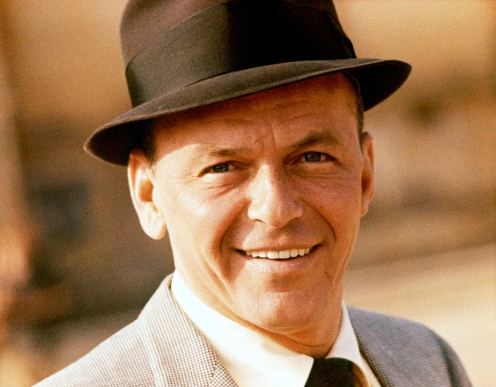

Фрэнк Синатра – известный американский певец, актер кино, продюсер, кинорежиссер, шоумен. Славился высоким мастерством исполнения песен, виртуозной техникой интонационного фразирования, ясной артикуляцией каждого слова и слога и «бархатным» тембром голоса. За 60 лет творческой карьеры, Синатра исполнил роли в более 50 кинофильмах, исполнил в студии и на концертах более двух тысяч песен разных авторов, гастролировал в более 40 стран мира и пластинки с его песнями проданы в количестве более 150 миллионов копий